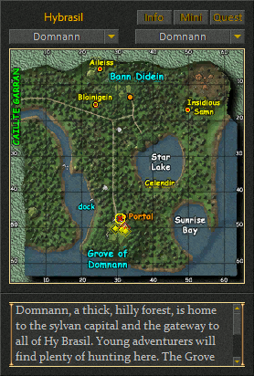

Map
The Map window is used to display the geographical area for the zone your character is currently located in. The maps contain labels for various regions and points of interest. Map markers, which are continuously updated in the window, show your character and group mates locations within the zone. In addition, special quest markers are sometimes visible in the window to show the location of nearby quest NPCS and waypoint locations.
The window will appear when you click on the button labeled "Map" in the Main Menu or Command windows of the user interface. In addition you can type the command "/map" to activate the window.
The text at the top of the map window will show the name of the current area your character is located in such as Hibernia, Albion, Midgard, Shar Labyrinth, etc. The Info button is used to toggle the display of additional information about the current area that will appear at the bottom of the map window. The Mini button is used to toggle the view in the map window so the contents of the map window will change and follow your character as you move throughout the zone. The Quest button is used to toggle the visibility of nearby quest NPCs (yellow diamonds) and quest waypoints (red diamonds) in the map window.
The dropdown combo box on the left will show a list of each area within the current zone. The dropdown combo box on the right will appear when there are smaller zoomed in views available in within the current zone. When the custom mixed size maps are in use the right combo box will typically have an Overview item which when selected will switch to the 512 map size. You can select a new area from either of the two drop down lists to change the map view. Click on the Mini button at the top of the map window to return the window view to your characters current location with the smaller map sizes.
- Conceal
There is nothing shown when the window is concealed. The window is invisible with no graphics or controls to minimize the amount of memory used. Nothing will appear on the screen when you attempt to activate the window.
- Disable

Style 1
